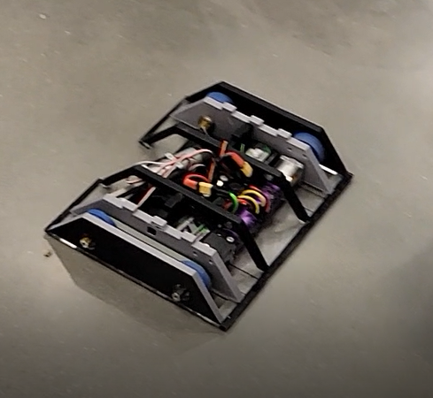
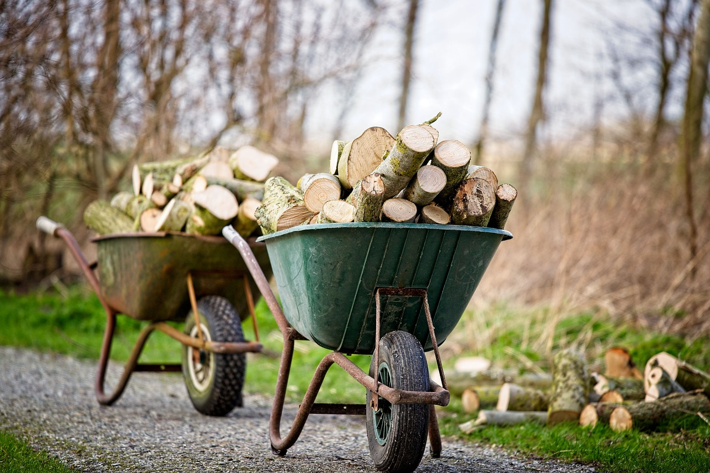

Portfolio
-
Combat Robotics 15lb Flipper
The combat robotics team designs and builds robots for robot combat competitions. As the leader of the 15lb project, I've been working on a flipper-style robot that does not use pneumatics in order to circumvent competition regulations. Instead a spring mechanism was developed.
-
Wheel Barrow Tree Pulling Winch
Removing trees and stumps is especially difficult on the west coast, where difficult terrain prevents heavy equipment from accessing certain areas. Therefore, a wheelbarrow based tree pulling winch system was developed for these applications.
-
MX-5 Miata

Autocross events and open track days are one of my favorite hobbies. Pictured is the 2016 MX-5 Miata that I've worked on supercharging and upgrading for track use.
-
Suzuki DR125

Last year, I began restoring a 1987 Suzuki DR125 dirt bike. So far I've stripped down the frame and re-painted it to its original factory silver color. Additionally, mechanical repairs were made.
-
Microwave Stadium

Microwave Stadium is at the cutting edge of innovation in the field of putting random objects in the microwave for too long and seeing what happens. T shirts are availiable.